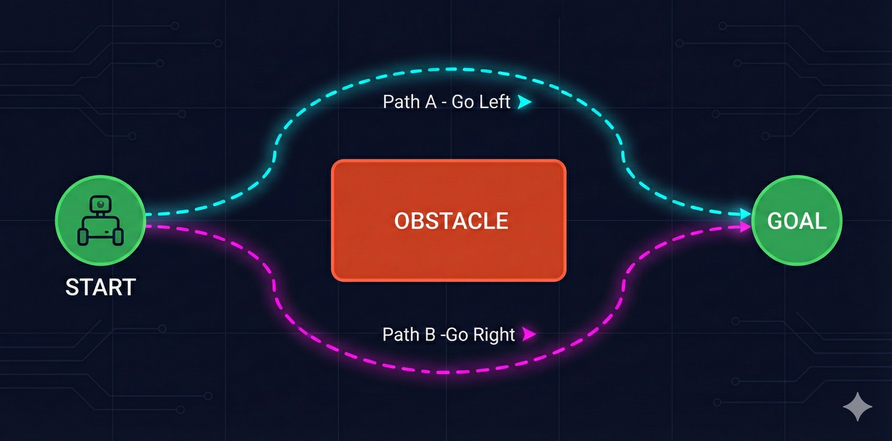
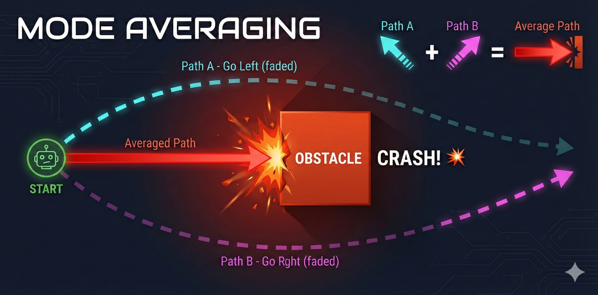

Why Can't Robots Fold Your Clothes?
A Journey from Equations to Intuition
The Paradox
You've seen the videos. Boston Dynamics robots doing backflips. Humanoids playing table tennis at superhuman speed. Quadrupeds navigating obstacle courses that would trip most humans. The future of robotics looks incredible.
And yet... look around your home. Where's the robot that folds your laundry? The one that loads your dishwasher? The helpful assistant that tidies up after dinner?
Nowhere. Despite decades of robotics research and billions in investment, we don't have general-purpose household robots. We don't even have robots that can reliably hold clothes, let alone fold them.
High-level reasoning is computationally easy for robots. Sensorimotor skills that humans find trivial - picking up objects, folding fabric, navigating cluttered rooms - require enormous computation and learning. Evolution spent billions of years optimizing our motor skills; we've had computers for less than a century.
Here's another way to see the gap: think about how accessible AI has become for developers.
Three years ago, training your own language model required a research lab. Today, you can fine-tune GPT from your laptop with an API call. LLMs went from "only OpenAI can do this" to "I built one over the weekend" in record time. The barriers collapsed.
That hasn't happened for robotics.
This is why we're using the SO-ARM101 for this bootcamp. At ~$300, it's one of the first truly accessible robot arms for learning. Four arms, 48 servos, bimanual manipulation - enough to tackle real tasks like clothes folding. By the end of this course, you'll understand why the robots in expo videos can't do what you'll teach your SO-ARM101 to do.
The Beautiful Failure of Classical Robotics
Classical robotics is built on a beautiful idea: if you know the physics, you can compute the motion. Want to move a robot arm to a specific point? Just solve the equations.
FORWARD KINEMATICS: Given angles → Find position
θ₁ = 30° Where does the
╲ gripper end up?
╲ L₁ ↓
╲
○ θ₂ = 45° x = L₁·cos(θ₁) + L₂·cos(θ₁+θ₂)
╲ y = L₁·sin(θ₁) + L₂·sin(θ₁+θ₂)
╲ L₂
╲
⬡ ← gripper at (x, y)
If forward kinematics is "given angles, find position"... what if you need to do it backwards? Given a target position, which angles should you use?
This is inverse kinematics (IK), and it's where the elegance starts to crack.
Unlike FK, IK often has multiple solutions - or no solution at all. Your robot might be able to reach a point with its elbow up or elbow down. Or the point might be outside its reach entirely. Suddenly, simple trigonometry becomes a constrained optimization problem.
Your SO-ARM101 has 6 joints per arm. For FK, you chain 6 transformation matrices together - still manageable. But for IK? With 6 joints, you're solving a system with multiple solutions, joint limits, and singularities (positions where the math breaks down). Now imagine coordinating two arms for bimanual manipulation...
Consider a simple pendulum. The equation of motion is textbook physics:
θ̈ = -(g/L) · sin(θ)
where:
θ = angle from vertical
g = gravitational acceleration
L = pendulum lengthThat beautiful equation ignores: air resistance (the pendulum doesn't swing in a vacuum), joint friction (the pivot point has drag), material deformation (the rod isn't perfectly rigid), and temperature effects (metal expands, lubricant viscosity changes). The real world has infinite hidden variables.
This is called undermodeling - your mathematical model doesn't capture enough of reality. And here's the cruel irony: you can't capture enough of reality. The real world is infinitely complex.
Now imagine trying to model a robot folding fabric. The cloth deforms unpredictably. Each fold changes the dynamics. The material properties vary across different clothes. You'd need to model every fiber.
1. The Pipeline Problem: Perception → State Estimation → Planning → Control. If any block fails, errors cascade through the entire system.
2. Multimodal Data: Classical equations can't incorporate camera images, force feedback, and joint angles simultaneously.
3. Undermodeling: You can never capture all real-world variables in equations.
4. Ignoring Data: We have massive robotics datasets now - classical methods don't use any of them.
The Dangerous Promise of Reinforcement Learning
Reinforcement learning has a seductive premise: the robot doesn't need equations. It just needs to try things and learn from the results.
REINFORCEMENT LEARNING LOOP
┌──────────────────────────────────────┐
│ │
│ Robot tries action │
│ ↓ │
│ Environment responds │
│ ↓ │
│ Robot gets reward/punishment │
│ ↓ │
│ Robot updates strategy │
│ ↓ │
│ (repeat millions of times) │
│ │
└──────────────────────────────────────┘
Let's think through what this means for a real robot. Imagine you want to teach your SO-ARM101 to pour coffee - specifically, to pour a heart shape in the foam, like a skilled barista.
You tell the robot: "Try pouring. I'll give you a reward when you make a good heart shape." What could go wrong?
Trial 1: Robot tilts cup too fast → hot milk sprays across table
Trial 47: Robot grips cup too hard → cup shatters
Trial 203: Robot finds local optimum → pours directly onto its own sensors
Trial 1,847: Still no heart shape. Kitchen is destroyed. Robot arm has burn marks from hot milk.
This is the safety problem. RL requires exploration - trying random actions to discover what works. In a video game, random exploration is fine. In physical reality, random exploration means broken robots, damaged environments, and possibly injured humans.
This is the reward design problem. It's surprisingly hard to specify what you want.
Is a heart shape defined by symmetry? Curvature? Contrast against the coffee? Human aesthetic judgment? Different baristas make different hearts - which one is "correct"?
And even if you could define the reward perfectly, there's the sparse reward problem. The robot only gets positive feedback when it makes a recognizable heart. That might take tens of thousands of random attempts. Until then? Zero signal. The robot is wandering in the dark.
Safety: Random exploration damages real hardware and environments.
Reward Design: Specifying exactly what you want is often harder than solving the task manually.
Sparse Rewards: Complex tasks give feedback only at the end - the robot gets no signal during learning.
Generalization: An RL policy trained on one coffee cup often fails on a different cup. Each variation requires retraining.
Learning Like Humans: The Imitation Breakthrough
Think about how humans actually learn motor skills. Did you learn to write by randomly scribbling until you accidentally made letters? Did you learn to pour water by spilling it thousands of times until you got lucky?
No. Someone showed you. You watched, you imitated, you refined.
❌ Reinforcement Learning
Robot tries random actions → Gets reward signal → Slowly learns over millions of attempts
✅ Imitation Learning
Expert demonstrates task → Robot observes → Robot learns to copy the expert's behavior
Let's go back to our coffee pouring task. With imitation learning, you don't need to define a reward function. You don't need the robot to explore randomly. You just... pour the coffee yourself while the robot watches.
IMITATION LEARNING: Observation-Action Pairs
Time Observation (what robot sees) Action (what expert did)
──── ─────────────────────────────── ───────────────────────
t=0 Cup at position (0, 0) Move arm to (10, 5)
t=1 Cup at position (10, 5) Tilt wrist 15°
t=2 Milk starting to pour Tilt wrist 25°
t=3 Pattern forming Move arm left slowly
... ... ...
Robot learns: "When I see THIS → I should do THAT"
Policy: π(observation) → action
Input (observation):
- Joint angles: [θ₁, θ₂, θ₃, θ₄, θ₅, θ₆] (proprioceptive)
- Camera image: 640×480 RGB (visual)
- Force sensors: [f₁, f₂, ...] (tactile)
Output (action):
- Target joint positions for next timestep
- Or: motor torques to applyThis is where your SO-ARM101's bimanual setup shines. You have Leader arms (that you control) and Follower arms (that replicate). To collect demonstrations: you move the Leader arms to fold clothes, and the system records every joint angle and camera frame. Then you train a policy to map observations → actions. The Follower arms learn to replicate your movements.
The elegance of this approach is stunning. No reward engineering. No dangerous exploration. No need to derive physics equations. You just show the robot what to do.
And here's what makes it practical: we now have massive datasets of robot demonstrations. The LeRobot library on Hugging Face hosts datasets from research labs around the world - manipulation tasks, locomotion, tool use. The data revolution that transformed NLP is finally reaching robotics.
Imagine you've recorded a perfect demonstration. The robot tries to replicate it. At timestep 47, its action is slightly off - maybe by just a few millimeters. Now it's in a state it never saw during training.
What happens next? The policy has no idea what to do from this unfamiliar state. It guesses - and guesses wrong. Now it's even further off track. The errors compound. By timestep 100, the robot is completely lost.
When your SO-ARM101 folds a shirt, it might take 500 timesteps. If each timestep has even a 1% chance of drifting off track, naive imitation learning almost guarantees failure. ACT (Action Chunking Transformer) predicts chunks of ~100 actions at once, reducing this to just 5 decision points - a much more robust approach.
But there's an even deeper flaw - one that appears even when your demonstrations are perfect and your policy never drifts. It's the reason why naive imitation learning fails on almost all real-world tasks...
The Plot Twist: When Good Paths Average to Disaster

You collect demonstrations from multiple humans. Some people go left around the box. Others go right. Both paths are perfectly valid - they both reach the goal.
You train your neural network on these demonstrations. It learns to predict actions from observations.
The robot sees the obstacle. It has learned from demonstrations that went both left AND right. What does it do?
The neural network outputs the average of the two paths. Half-left plus half-right equals... straight ahead. The robot drives directly into the obstacle.

When the same observation can lead to multiple valid actions, a standard neural network averages them together. This mode averaging produces an action that might not be valid at all. Two good solutions, averaged, become one terrible solution.
This is called the multimodal targets problem. The word "multimodal" here means "multiple valid modes of behavior" - not multiple sensor modalities.
And it explains why naive imitation learning fails on real tasks. The training data contains multiple valid strategies. The neural network, trained to minimize prediction error, learns to predict the average - which is often invalid.

Imagine you've mastered the arm motion for bowling a cricket ball. But you're blindfolded - you can't see where the batsman is standing. No matter how perfect your technique, you'll bowl to the wrong place. Visual input isn't optional. Coming from LLMs, we forget this - text models don't need to "see." But robots absolutely do. The observation must include what matters for the decision.
Probability Distributions: The Real Solution
The key insight is this: robot policies shouldn't output a single action. They should output a probability distribution over actions.

This is the foundation of modern robot learning. Techniques like Variational Autoencoders (VAEs), diffusion models, and transformer-based architectures can all learn to represent these multimodal distributions.
In our next lesson, we'll dive deep into VAEs - understanding how they encode observations into a latent space and decode them into action distributions. This is the mathematical machinery that makes modern robot learning possible.
When you train an ACT (Action Chunking Transformer) policy on your SO-ARM101, you're training a model that outputs distributions over action sequences. When folding a shirt, the model might see two valid starting points - left sleeve or right sleeve. Instead of trying to fold some averaged middle portion, it samples one coherent strategy and commits to it.
The Future Is Already Here
Everything we've discussed - imitation learning with multimodal policies - is already producing results that seemed impossible a few years ago.
The architecture behind this breakthrough combines several ideas we'll explore in this bootcamp:
Vision-Language Models (VLMs)
Models that understand both images and text. Given a photo and a question, they can reason about what they see. This is the "eyes" of the robot.
Vision-Language-Action Models (VLAs)
VLMs extended to output actions, not just text. Now the model can see an image, understand a command ("fold this shirt"), and output motor commands.
The OpenX Dataset
A massive collection of robot demonstrations from labs worldwide. Standardized format, diverse tasks, multiple robot morphologies. The ImageNet moment for robotics.
Foundation Models for Robotics
Pre-trained on massive data, fine-tuned on specific tasks. Just like GPT is pre-trained on text and fine-tuned for conversation, robot foundation models are pre-trained on diverse manipulation data.
Here's what's changing: you no longer need to train from scratch. Projects like LeRobot from Hugging Face provide pre-trained models, standardized datasets, and training pipelines. The SO-ARM101 + LeRobot combination is designed to be the entry point that finally democratizes robot learning.
Your Journey Begins
Classical Robotics
Beautiful equations, but too brittle for the real world. Can't handle uncertainty, data, or multimodal sensing.
Reinforcement Learning
Learning from experience, but dangerous, data-hungry, and hard to specify rewards for complex tasks.
Imitation Learning
Learning from demonstrations - elegant and safe. But naive approaches suffer from compounding errors and fail on multimodal tasks.
Generative Policies
Output distributions, not point estimates. This solves the averaging problem and enables real-world performance.
Lesson 2: Deep Generative Modeling (VAEs)
How do we represent probability distributions over actions? We'll build VAEs from scratch and understand the encoder-decoder architecture.
Lesson 3: Transformers for Sequences
Robot actions come in sequences. We'll implement the Transformer architecture that powers modern sequence modeling.
Lesson 4: ACT Policy Architecture
Combining everything: VAEs + Transformers = Action Chunking Transformers. We'll implement the full policy architecture and train it on your SO-ARM101.
Before the next lesson, make sure you understand:
• Why mode averaging fails - The multimodal targets problem
• Why errors compound - Small drifts snowball into complete failure
• Probability distributions - What's a Gaussian? What does it mean to sample?
• Your SO-ARM101 - Get familiar with the 6 degrees of freedom per arm
We're not asking you to implement anything yet. Just build intuition. The math comes next.
Robots that fold clothes aren't science fiction anymore. The pieces are falling into place: affordable hardware (SO-ARM101), massive datasets (OpenX), pre-trained models (LeRobot), and the theoretical understanding (imitation learning with generative policies). You're learning this at exactly the right time. The "Hugging Face moment" for robotics is happening now.